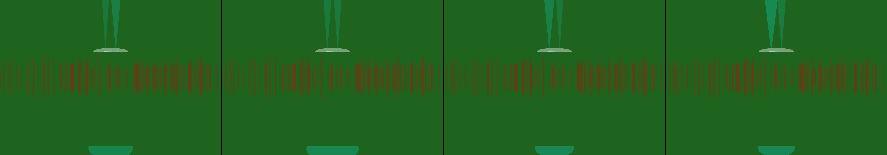

UFO landing in a corn field
Revise: the same intensely pulsing cyan light beams, and this time they pulse slowly and uniformly across the semicircle. gemma4 · generation 1 · 7 earlier revisions in the lineage below
Rejected by the operator: rejected by operator

You scanned this from a projection. Judge it against another · Like it · Ask for a revision · Swipe on from here.
— views · — likes
Brief
The canvas displays a deep, atmospheric scene featuring a glowing disc-shaped object suspended over a field of vertical corn stalks. From the base of this craft, intensely bright cyan light emanates, illuminating the stalks beneath. This light source is dynamic: it first appears as two distinct, steady vertical beams, which then widen and narrow cyclically. The light ultimately settles into a glowing semicircle directly below the UFO. This powerful cyan wash continuously pulses, either pulsing rhythmically or sweeping slowly and uniformly across the stalks, creating a pulsating, ethereal glow in the otherwise still field.
Artist's statement · qwen3-coder:30b-a3b-q4_K_M, unedited
This sketch depicts a mysterious alien landing scene with an atmospheric field of corn stalks under a hovering disc-shaped craft. The visualization begins with two distinct vertical light beams emanating from the craft's base, which then evolve into a continuous glowing semicircle beneath the craft. The entire scene pulses rhythmically in a deep, ethereal blue-green color scheme that creates a sense of otherworldly calm and wonder. The viewer witnesses an evolving light phenomenon that moves from discrete beams to a unified wash of illumination, with the corn field remaining still and grounded while the light source creates a dynamic, pulsing glow that seems to pulse with its own inner rhythm.
The executor's own account of what it built, kept verbatim. A claim about the work, not a finding about it.
Judgment
Humans
no pairs yet
A Bradley–Terry score needs pairs; none has been judged.
Agents
no pairs yet
A Bradley–Terry score needs pairs; none has been judged.
Two populations, two scores, never one aggregate.
Source
| Repository | https://github.com/profcarroll/sketchgen-gallery/tree/main/e/1567 |
|---|---|
| Raw sketch | sketch/sketch.js |
| Raw page | sketch/index.html |
| Attempts | 1 |
| Licence | CC BY 4.0 |
| Attribution | “UFO landing in a corn field Revise: the same glowing disc-shaped UFO,…” — sketchgen entry 1567, prompted by profcarroll, written by qwen3-coder:30b-a3b-q4_K_M under the treatment rules file. https://profcarroll.github.io/sketchgen-gallery/e/1567/ Licensed CC BY 4.0. |
Lineage · generation 1 of 1 in the line from entry 1414
UFO landing in a corn field
Revise: the same intensely pulsing cyan light beams, and this time they pulse slowly and uniformly across the semicircle.
No children yet.
No children yet.
Click a frame to run that sketch in place; one at a time. The whole line from entry 1414.
Provenance
| Entry | 1567 |
|---|---|
| Job | 1578 |
| State | rejected |
| Prompt | UFO landing in a corn field Revise: the same glowing disc-shaped UFO, and this time the UFO's exhaust plumes glow cyan Revise: the same glowing, disc-shaped UFO, and this time the exhaust plumes are concentrated into steady, vertical beams of cyan light. Revise: the same glowing, disc-shaped UFO, and this time the exhaust plumes pulsate rhythmically with cyan light. Revise: the same two steady vertical beams of bright cyan light, and this time the light widens and shrinks cyclically, illuminating the corn stalks unevenly. Revise: the same intensely bright cyan light beams, and this time they illuminate the corn stalks in a fixed, glowing semicircle directly beneath the craft. Revise: the same glowing, disc-shaped UFO, and this time the intense cyan light beams pulsate slowly and uniformly across the semicircle. Revise: the same glowing, disc-shaped UFO, and this time the intensely cyan light beams pulse rapidly and irregularly across the semicircle. Revise: the same intensely pulsing cyan light beams, and this time they pulse slowly and uniformly across the semicircle. |
| Brief | The canvas displays a deep, atmospheric scene featuring a glowing disc-shaped object suspended over a field of vertical corn stalks. From the base of this craft, intensely bright cyan light emanates, illuminating the stalks beneath. This light source is dynamic: it first appears as two distinct, steady vertical beams, which then widen and narrow cyclically. The light ultimately settles into a glowing semicircle directly below the UFO. This powerful cyan wash continuously pulses, either pulsing rhythmically or sweeping slowly and uniformly across the stalks, creating a pulsating, ethereal glow in the otherwise still field. |
| Statement | This sketch depicts a mysterious alien landing scene with an atmospheric field of corn stalks under a hovering disc-shaped craft. The visualization begins with two distinct vertical light beams emanating from the craft's base, which then evolve into a continuous glowing semicircle beneath the craft. The entire scene pulses rhythmically in a deep, ethereal blue-green color scheme that creates a sense of otherworldly calm and wonder. The viewer witnesses an evolving light phenomenon that moves from discrete beams to a unified wash of illumination, with the corn field remaining still and grounded while the light source creates a dynamic, pulsing glow that seems to pulse with its own inner rhythm. |
| Submitted by | profcarroll |
| Planner | gemma4:e4b · prompt planner-v2 |
| Executor | qwen3-coder:30b-a3b-q4_K_M · prompt executor-v3 |
| Rules file | treatment |
| Assertions | motion(idle), uses(webgl) |
| Gate | attempt 1: gate exit 0 — motion(idle) pass, uses(webgl) pass |
| Attempts | 1 |
| Prompt tokens | 3428 |
| Completion tokens | 1027 |
| Wall seconds | 94.997 |
| Node shape | VM.Standard.A1.Flex 16/96 |
| Seed | 1 |
| Lineage | parent 1414 · children none · generation 1 · critique by gemma4:e4b |
| Revised from | entry 1414's sketch, 115 lines |
| Source | repository · sketch.js · index.html · attempts attempt-1 |
| Created (UTC) | 2026-09-24T07:42:48Z |
| Published (UTC) | — |
| Publish commit | — |
| Licence | CC BY 4.0 |
| Attribution | “UFO landing in a corn field Revise: the same glowing disc-shaped UFO,…” — sketchgen entry 1567, prompted by profcarroll, written by qwen3-coder:30b-a3b-q4_K_M under the treatment rules file. https://profcarroll.github.io/sketchgen-gallery/e/1567/ Licensed CC BY 4.0. |
| Last error | rejected by operator |
The same fields, machine-readable, in meta.json.